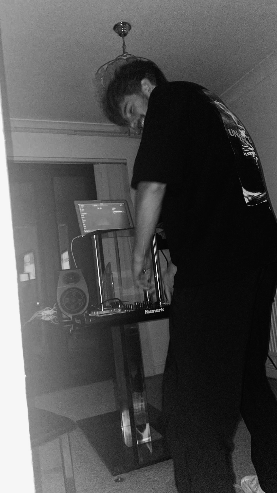

RESIDENT 002
JACK
WHYTE
MANCHESTER, UK
Jack Whyte is a Vanity Blue resident and co-founder of the platform alongside James Fish.
The two met at university through a shared love of music and a belief that discovering something new should still feel exciting and personal. Vanity Blue grew from that idea: a platform where residents can play freely, local artists can be heard, and listeners can come across music they might never have found otherwise.

BROADCASTS
ARCHIVE